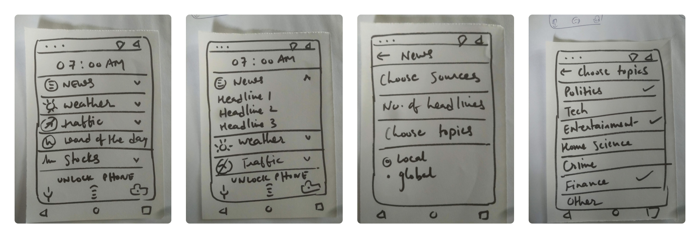

Getting the exact and precise information you need
Role
User Research
Interaction Design
Visual Design
Prototyping
Testing
Type
Interaction Design Capstone Project
Tools
Adobe XD
UserTesting
Timeline
May - Jul 2020
(10 Weeks)
Background
___
People use their Android smartphones for a varied range of tasks, one of which is glancing at the information. People consume a lot of short information in the form of weather report, news headlines, text messages, etc. While there are separate channels that provide brief as well as detailed information based on different categories, there is no good way to quickly glance through all the information one wants in a single place.
Problem
How can the experience of glance on Android smartphones be improved?
___
Solution
___
A mobile app that transforms the lockscreen into a scrollable feed with personalised content for quick glance.
Revamped lockscreen
A personalised feed on the lockscreen, completely customised by the user. Every card can be expanded by a tap and cleared with a swipe, just like the usual notifications.
Quick glance with relevant actions
Expanded cards give a quick glance at the information, and additional relevant actions can be accessed right there, with just a single tap.
Customisation and variety
Different type of content can be placed in the EasyGlance feed, and each of these cards can be customised based on the needs and interests.
Design Process
How I solved the problem, and how did I get here?
___
Initial Aim
How it started...
___
Initially, the aim was to improve and revamp the Google Assistant Feed for a better glance experience. I chose Google Assistant because it is well integrated with other Google services on Android smartphones, and has almost every information consolidated in one place.
User Research
Let's observe! 🧐
___
To understand what exactly the users need and expect from the experience of glance on their smartphones, I conducted a small observation experiment. I observed three different categories of people while using Google Assistant Feed, and noted their pain points.
Aditya
21 yrs / College student
Checks upcoming schedule before going to bed.
Pain Points
Weather for next day isn't shown, has to search separately.
Meena
45 yrs / Housewife
Checks weather and birthdays of her friends.
Pain Points
Getting to the Google Assistant Feed is tedious.
Rohit
37 yrs / Professional
Checks his schedule and any upcoming meetings or tasks.
Pain Points
Wants only information tailored for him, nothing extra.
User Needs
What do users want? 🤔
___
Based on the observation experiment and by analysing the pain points of the participants, I deduced that the glance experience should satisfy three primary user needs.
1
Get desired information quickly
2
In a concise manner, without extra details
3
Easy access to relevant actions
Competitive Research
How do the apps currently in the market look like? 📝
___
I looked at the prominent applications that provide a glance experience, and compared them. While they satisfy a majority of the checkpoints, each of them misses out on something.
Google Assistant
Glance Lite
Floatify
Customisation
clear
check
check
Minimal information
check
clear
check
Easy to use
clear
check
check
Variety of info/tasks
check
check
clear
Relevant actions
check
clear
check
Pivot Point
Let's design a new app!!
___
After looking at the apps in this domain, I realised that none of them were actually really good. Existing apps couldn't satisfy the user needs in a proper manner, and so I decided to design a new app that checked all the boxes to provide a complete glance experience.
Inspiration Board
Naming the app
___
To name the app, I created an inspiration board with few keywords around the topic and came up with "EasyGlance".
Conception & Design
How should the app work?
___
Storyboards
Before beginning with articulation of what the app would actually provide in terms of functionality and features, it was important to get a picture of how the users would use the app that I was about to design. So, I produced two storyboards with similar objectives, but different underlying design ideas.
Storyboard #1
Storyboard #2
Paper Prototypes
I started with the low fidelity paper prototypes because the features of the app, along with its structure and layout, are quite flexible in the beginning.
Since users would want to get to the information and actions they need quickly, why not present them with these options directly when they see their phones? This is when I thought that the lock-screen of the phone would be the optimal screen to present the information that the users need.
Paper Prototype #1
This prototype was inspired by the Google Assistant Feed, which presents info like weather, meetings, etc. in the form of card-like widgets. Large cards on the lock-screen would not be a nice first-view of the phone. Thus, a left swipe on the lock-screen to slide in the EasyGlance feed from the right edge would be a decent option. Additionally, I wanted it to be handy for the users to customise their EasyGlance feed right there. Hence, the presence of the edit button right there in the top right.

Paper Prototype #2
This prototype was inspired by the very nature of notifications. Notifications arrive on the phone and are displayed on the lock-screen when there is something important to notify. Once the user no longer needs a notification, it can be swiped away. Why not give the information that the user needs in the form of notifications on the lock-screen? The EasyGlance notifications could be expanded to get the information, and could be swiped away if not required.
Heuristic Evaluation 📋
My peers evaluated the paper prototypes based on Nielsen's heuristics, and flagged the violations with appropriate description. The severity rating assigned to each heuristic violation helped me in prioritising the critical issues. Based on the heuristic evaluation, I was able to find issues in my paper prototypes, and I fixed the critical ones as I started designing the high fidelity prototype.
High Fidelity Prototype
I decided to transform paper prototype #2 into high fidelity because users are more familiar with notifications. Each screen of the application was wireframed, and then converted to a fully refined page. At this stage, I paid attention to minute details about look and feel.
Testing
Is the app usable for the users?
___
In-person Experiment
After the completion of the high fidelity prototype, I conducted an in-person experiment with a group of people to find if the app had any usability issues. With a formal testing protocol, the participants were asked to perform a simple task using the prototype, and their actions were closely observed. I also interviewed the participants in the end, to understand their experience. The issues detected in this experiment paved my way for the next step.
A/B Test
I tried to fix the cardinal issues detected in the previous stage, and came up with two designs. A simple online A/B test was hosted on User Testing with 4 participants. 3 out 4 participants were able to successfully complete the task, with version A getting a better success rate than version B. Their recorded videos were received, which included their verbal reactions to the task they were performing. By analysing these videos and listening to the participant feedback, I decided to go ahead with version A and improved it with minor modifications.
A/B test on User Testing
Extras
The final prototype of the app gives a glimpse of how the app would look like upon development. I also made a short video about EasyGlance.